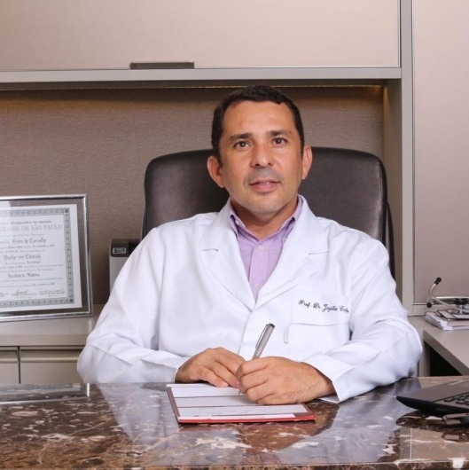

Reumatologista · CRM-BA 23165 · RQE 10280
Prof. Dr.
Jozélio Freire de Carvalho
Doenças reumáticas pedem tempo, escuta e acompanhamento. A ciência ajuda a decidir; a conversa ajuda a seguir.
Reumatologista em Salvador, com Título de Especialista pela Sociedade Brasileira de Reumatologia e 317 trabalhos científicos no ORCID. Atende adultos e também crianças e adolescentes, no consultório e por teleconsulta.
★★★★★5,0 no Google · 26 avaliações · 21 opiniões na Doctoralia
Por onde começar
O que trouxe você até aqui?
Escolha o assunto e leia com calma. Cada página explica o que costuma ser avaliado, quando procurar o reumatologista e como é o acompanhamento. A indicação é individual, definida em consulta.
Recebi um exame de FAN ou anticorpos alterado
Lúpus, síndrome antifosfolípide, Sjögren e vasculites.
Doenças autoimunesArtritesMinhas juntas incham e amanhecem rígidas
Artrite reumatoide, artrite psoriásica e espondilite.
ArtritesDor crônicaDor no corpo todo, nas mãos ou nos joelhos
Fibromialgia, artrose, gota e tendinites.
Dor, artrose e gotaCriançasMeu filho reclama de dor nas articulações
Doenças reumáticas na infância e na adolescência.
Infância e adolescênciaTambém: Pesquisa e ensinoA consulta e a teleconsultaSobre o Prof. JozélioOnde atendo
Os dois grandes grupos
Cerca de 150 tipos de reumatismo, em duas fichas.
No artigo “Primeira consulta Reumatologia”, publicado no perfil da Doctoralia, o Prof. Jozélio explica: “A doença reumática se caracteriza por envolvimento do sistema osteomusculoarticular, ou seja envolve os ossos, músculos ou as articulações que não foi causada por trauma (ortopedia cuida).” E organiza as doenças da especialidade em dois grandes grupos.
Doenças autoimunes
O sistema de defesa passa a atacar o próprio corpo: articulações, pele, vasos, músculos, rins.
- Lúpus
- Artrite reumatoide
- Síndrome antifosfolípide
- Espondiloartrites
- Miosites
- Esclerodermia
- Vasculites
de reumatismo
Degenerativo-metabólicas
Desgaste da cartilagem, depósito de cristais, dor crônica e sobrecarga de tendões.
- Artrose
- Fibromialgia
- Gota
- Tendinites
Artigo “Primeira consulta Reumatologia”, do Dr. Jozélio na Doctoralia · ver a fonte
Produção científica
Sumário
Artigos recentes · 2025–2026
- 317
- trabalhos no ORCID, de 2004 a 2026
- 130+
- artigos no PubMed com afiliação na Bahia — nos conferidos, a UFBA
Síndrome antifosfolípide, lúpus e vasculites aparecem com frequência entre os temas. A pesquisa não aparece no consultório como promessa: aparece como cuidado em ler, explicar e decidir junto.
- 01Poliarterite nodosa e síndrome antifosfolípide: revisão sistemáticaPolyarteritis nodosa and antiphospholipid syndrome: a systematic reviewClinical Rheumatology · 2026PMID 42377683
- 02Hidroxicloroquina como terapia adjunta na prevenção de nova trombose na síndrome antifosfolípide primáriaHydroxychloroquine as an Adjunct Therapy for Secondary Thrombosis Prevention in Primary Antiphospholipid SyndromeRheumatology and Therapy · 2026PMID 42105054
- 03Hidrartrose intermitente (sinovite periódica): revisão narrativaIntermittent hydrarthrosis (periodic synoviosis): A narrative reviewAutoimmunity Reviews · 2026PMID 42289262
- 04Doenças reumáticas ao longo da históriaTracing Rheumatic Diseases Through TimeThe Journal of Rheumatology · 2026PMID 41771557
- 05Segurança da infusão acelerada de rituximabe em doenças reumáticas: revisão sistemáticaSafety of Accelerated Rituximab Infusion in Rheumatic Diseases: A Systematic ReviewRheumatology and Therapy · 2025PMID 40517360
Trajetória
Da Bahiana ao Hospital das Clínicas — e de volta a Salvador.
O vínculo como reumatologista no HC-FMUSP está no histórico público do CNES; o vínculo com a UFBA, no ORCID. Formação e títulos acadêmicos vêm do currículo publicado por ele na Doctoralia.
- 1997Medicina
Graduação na Escola Bahiana de Medicina e Saúde Pública, em Salvador.
Currículo · Doctoralia - 1998–2002Residências no HC-FMUSP
Medicina Interna, Medicina Intensiva e Reumatologia no Hospital das Clínicas da FMUSP, segundo o currículo dele.
Currículo · Doctoralia e LinkedIn - 2005–2007Doutorado e pós-doutorado
Doutorado em Ciências (Reumatologia) pela FMUSP e pós-doutorado no Center for Autoimmune Diseases do Sheba Medical Center, Israel, segundo o currículo dele.
Currículo · Doctoralia - 2007–2011Reumatologista do HC-FMUSP
Registrado como médico reumatologista no Hospital das Clínicas da Faculdade de Medicina da USP.
CNES - 2016UFBA
Vínculo com a Universidade Federal da Bahia; o Instituto de Ciências da Saúde aparece nas afiliações dos artigos.
ORCID · PubMed - HojeSalvador
Consultório, teleconsulta e atendimento como reumatologista em ambulatório-escola e hospital.
Doctoralia · CNES
Nas palavras dele
“Com uma trajetória marcada pela dedicação à medicina e ao ensino, alio conhecimento científico à escuta atenta e ao cuidado individualizado. Acredito que cada pessoa merece um olhar único, um plano de cuidado que respeite sua história, seus sintomas e seus objetivos.”
“Sobre mim” do cartão digital do Dr. Jozélio · ver a fonte
“Ofereço atendimentos presenciais e on-line, com o objetivo de facilitar o acesso a um cuidado médico humanizado, baseado em evidências e construído em parceria com cada paciente.”
Avaliações
Consulta detalhada e explicação clara.
Nota 5,0 em 26 avaliações no Google · 21 opiniões na Doctoralia
Sempre muito atencioso, paciente e disponível. Um médico exemplar.
Dr. Jozélio nos surpreendeu com a excelência no atendimento, atenção, cuidado ao mesmo tempo que muito profissionalismo e coerência em sua visão e atuação.
Faz uma consulta detalhada, conversa com o paciente de forma clara, muito atencioso e esclarece todas as dúvidas.
Muito bom médico, atencioso, profissional humano, adorei a consulta.
Ótimo médico, super atencioso e nos deixa muito à vontade.
Excelente profissional e ambiente super acolhedor.
Trechos de avaliações públicas na Doctoralia e na ficha do Google, com nome abreviado.
Ele responde
118 dúvidas de pacientes respondidas em público.
Na Doctoralia, o Prof. Jozélio responde perguntas enviadas por pacientes. Três exemplos, com as palavras dele — a resposta pela internet não substitui a consulta.
“Deve ser confirmado pelo médico, com base nos critérios clínicos e laboratoriais combinados.”
Resposta pública do Dr. Jozélio na Doctoralia · ver as respostas“o ideal é inicialmente procurar um reumatologista ou um neurologista,…”
Resposta pública do Dr. Jozélio na Doctoralia · ver as respostas“Sim, quem tem lúpus eritematoso sistêmico (LES) pode tomar a vacina da meningite, e ela é geralmente recomendada. Mas a aplicação deve ser sempre orientada pelo médico […]”
Resposta pública do Dr. Jozélio na Doctoralia · ver as respostasConteúdos
Onde ler e conferir o trabalho dele.
Os perfis públicos de onde vêm os fatos desta página: avaliações, currículo, registro na SBR e a produção científica completa.
Perfil com o currículo, o artigo sobre a primeira consulta e as respostas a pacientes.
Abrir ↗GoogleNota 5,0 em 26 avaliaçõesFicha pública do Prof. Jozélio, com avaliações e endereço.
Abrir ↗ORCID317 trabalhos (2004–2026)O registro acadêmico internacional com a lista completa de publicações.
Abrir ↗PubMedMais de 130 artigos indexadosArtigos com afiliação na Bahia, nos conferidos ligados à UFBA.
Abrir ↗SBRTítulo de Especialista · RQE 10280Perfil de associado na Sociedade Brasileira de Reumatologia.
Abrir ↗Instagram@drjozeliofreiredecarvalhoO perfil “Reumatologista Adulto e Pediátrico”, com as publicações dele.
Abrir ↗O consultório
Dois endereços em Salvador e a consulta por vídeo.
As fontes públicas trazem dois locais de atendimento. Ao marcar pelo WhatsApp, confirme com a equipe onde será a sua consulta. O atendimento é particular, segundo a Doctoralia.
Edifício Horto Office · Rua Waldemar Falcão, 979, sala 903 (Clínica OMANE) · Horto Florestal · Salvador – BA
Como chegarAv. Tancredo Neves, 2227 · Edifício Salvador Prime, térreo · Caminho das Árvores · Salvador – BA
Como chegarConsulta por vídeo, quando o caso permite. Veja como funciona.
HorárioAtendimento com hora marcada — confirme o dia, o horário e o endereço com a equipe pelo WhatsApp.
Febre alta com uma articulação inchada e quente, falta de ar, dor no peito ou fraqueza súbita? Não espere a consulta: procure o pronto-socorro mais próximo ou o SAMU (192). O consultório atende com hora marcada e não é serviço de urgência.
Dúvidas frequentes
Perguntas comuns
Quando procurar um reumatologista?
Quando há dor ou inchaço nas articulações por semanas, rigidez ao acordar que demora a passar, dor nas costas que melhora com o movimento, manchas na pele com dor articular, cansaço fora do comum com febre baixa, ou exames alterados como o FAN. Veja como é a primeira consulta.
Reumatologista e ortopedista cuidam das mesmas coisas?
Não exatamente. Nas palavras do Dr. Jozélio, a doença reumática envolve ossos, músculos ou articulações e “não foi causada por trauma (ortopedia cuida)”.
Ele atende crianças?
Sim. O Prof. Jozélio atende adultos e também crianças e adolescentes. Veja infância e adolescência.
Existe teleconsulta?
Sim. A teleconsulta aparece no perfil da Doctoralia, e ele escreve que oferece “atendimentos presenciais e on-line”. Veja quando ela ajuda.
Atende plano de saúde?
Segundo o perfil na Doctoralia, o atendimento é particular. Confirme os detalhes com a equipe ao agendar.
Onde fica o consultório?
As fontes públicas trazem dois endereços: o Edifício Horto Office, no Horto Florestal, e a Av. Tancredo Neves, 2227, em Caminho das Árvores. Ao agendar, confirme com a equipe onde será a sua consulta.
Qual o horário de atendimento?
Atendimento com hora marcada — confirme o dia, o horário e o endereço com a equipe pelo WhatsApp.
Agende
Uma doença crônica pede tempo, escuta e constância.
Consulta com hora marcada, presencial ou por vídeo. Fale com a equipe do consultório pelo WhatsApp (71) 99341-4643 e confirme com a equipe onde será a sua consulta.